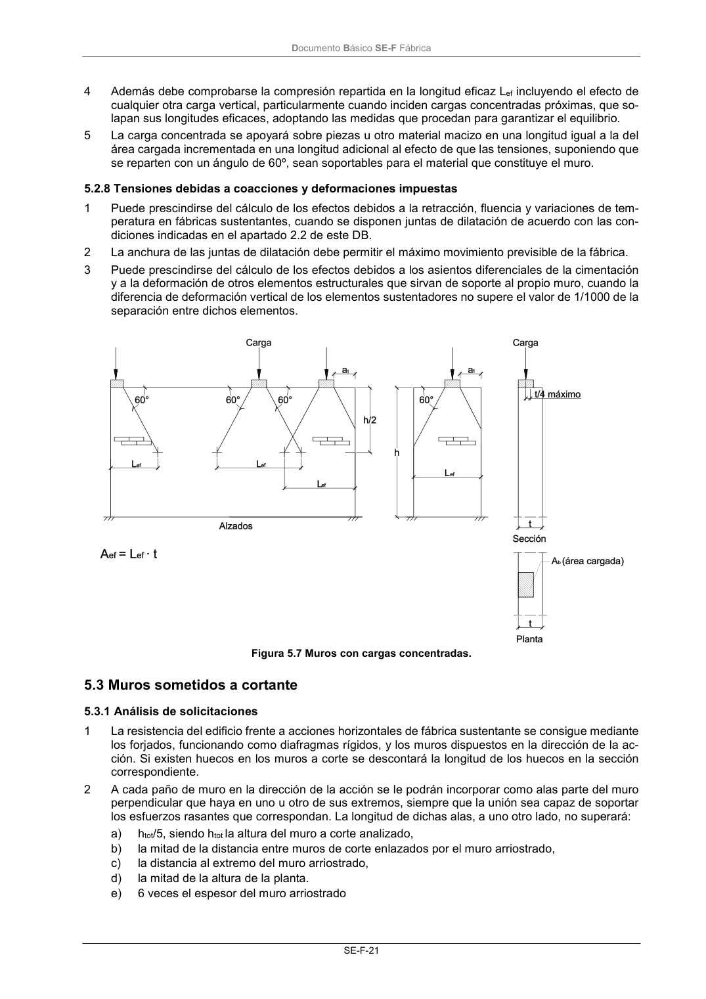

DB-SE-F Fábrica · edición 2019-12-20 · capa oficial
Documento DB-SE-F-oficial · SHA-256 del PDF e3e0805c3b4c307519c26dc34c3fdbf143d842edd013c91b0f52d2c73403d91c
Copia fiel del PDF fuente · Fuente oficial
Ficha de la disposición en la fuente oficial
Formatos: JSON del segmento · Markdown
5.3 Muros sometidos a cortante 5.3.1 Análisis de solicitaciones 5.3.1 Análisis de solicitaciones 1 La resistencia del edificio frente a acciones horizontales de fábrica sustentante se consigue mediante los forjados, funcionando como diafragmas rígidos, y los muros dispuestos en la dirección de la ac- ción. Si existen huecos en los muros a corte se descontará la longitud de los huecos en la sección correspondiente. 2 A cada paño de muro en la dirección de la acción se le podrán incorporar como alas parte del muro perpendicular que haya en uno u otro de sus extremos, siempre que la unión sea capaz de soportar los esfuerzos rasantes que correspondan. La longitud de dichas alas, a uno otro lado, no superará: a) htot/5, siendo htot la altura del muro a corte analizado, b) la mitad de la distancia entre muros de corte enlazados por el muro arriostrado, c) la distancia al extremo del muro arriostrado, d) la mitad de la altura de la planta. e) 6 veces el espesor del muro arriostrado Documento Básico SE-F Fábrica SE-F-22 Figura 5.8 Anchura admisible para las alas de un muro transversal. 3 Para la distribución de las acciones horizontales se empleará la rigidez elástica de los muros de corte, incluidas las alas. Para muros de altura mayor que el doble de su longitud, puede despreciarse el efecto de la rigidez a cortante. 4 Cuando los forjados puedan considerarse rígidos en su plano (por ejemplo, aquellos que cuentan con una losa superior hormigonada en obra) queda del lado de la seguridad distribuir las acciones hori- zontales entre los muros a corte en proporción a su rigidez, admitiendo que todos tienen el mismo desplazamiento. 5 Cuando la resultante de las acciones horizontales no pasen por el metacentro, o centro de las rigide- ces de los muros a corte, por disposición asimétrica en planta de éstos, o por otra razón, se conside- rará en los muros el efecto de la rotación del sistema (efecto torsor). Al equilibrio de dicho efecto de rotación colaboran eficazmente los muros transversales a la dirección en la que actúa la acción hori- zontal considerada. 6 El esfuerzo cortante horizontal máximo en un muro, calculado por análisis elástico lineal, puede re- ducirse en un 15 %, (atendiendo a una redistribución por fisuración limitada) siempre que se incre- menten los cortantes correspondientes a los muros paralelos inmediatos de tal modo que se man- tenga el equilibrio frente a las acciones de cálculo aplicadas. 7 El muro a corte, y en las alas unidas eficazmente a él mediante traba o amarres, debe considerar los efectos de las acciones: a) en el muro, el esfuerzo normal por efecto de las cargas verticales permanentes, utilizando el valor de cálculo con el coeficiente de seguridad que corresponde a acciones favorables, aplicado con la excentricidad debida a la flexión que causan las acciones horizontales; b) en las alas, el esfuerzo normal; c) en el muro, el esfuerzo cortante horizontal d) en la unión del muro con cada ala, el esfuerzo cortante vertical (rasante) máximo.
